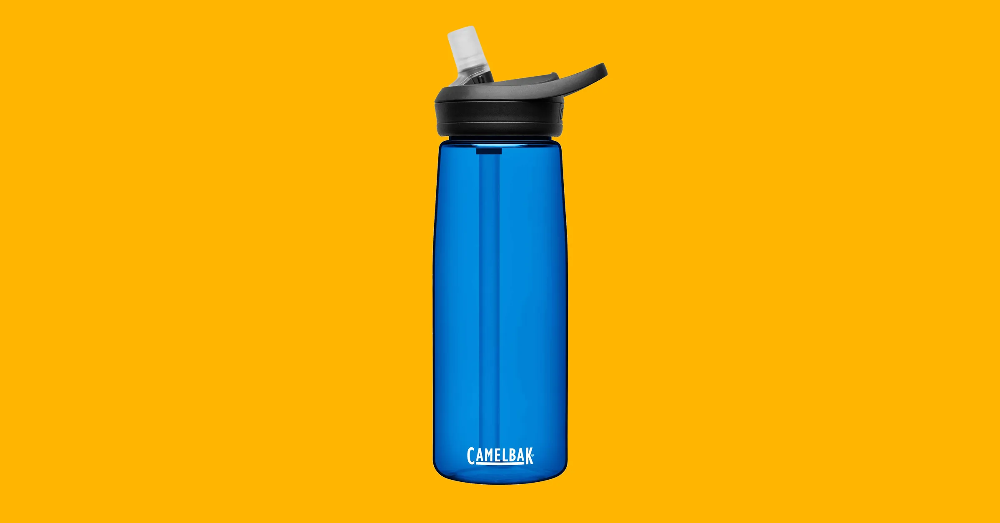
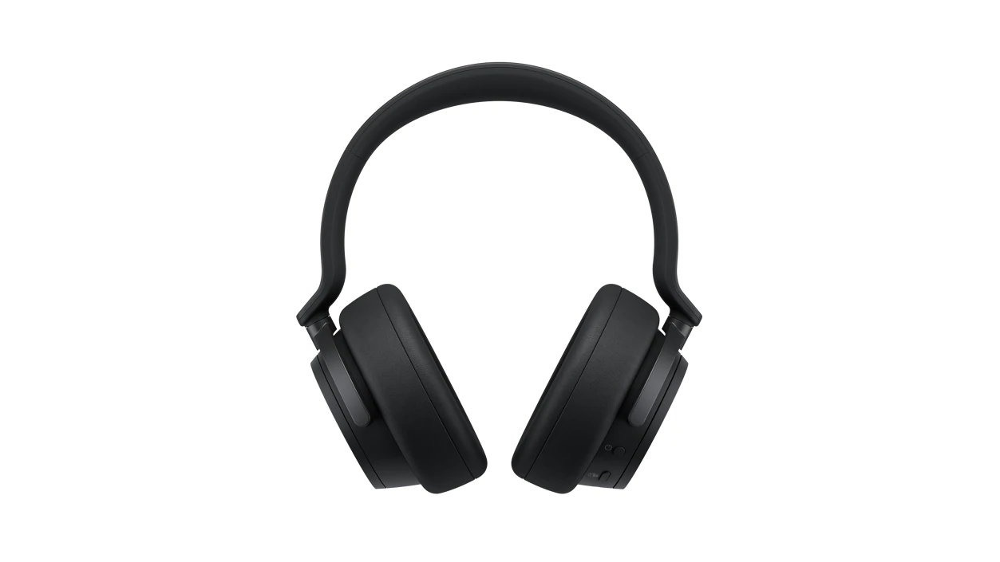

Case Study between Googlelens and Mobilenet
Test Image
-

Output on GOOGLE LENS - Water bottle
Output on Mobilenet Model - Water Bottle
Result - Both are accurate
Test Image
-

Output on GOOGLE LENS - Sport Shoes
Output on Mobilenet Model - Running Shoes
Result - Goggle lens is more accurate
Test Image
-

Output on GOOGLE LENS - Headphones
Output on Mobilenet Model - Microphone Mike
Result - Goooglee lens is more accurate
Test Image
-
Output on GOOGLE LENS - Soft toy
Output on Mobilenet Model - Picachu
Result - Mobilenet is more accurate
Test Image
-

Output on GOOGLE LENS - Bedroom
Output on Mobilenet Model - Bedroom
Result - Both are accurate